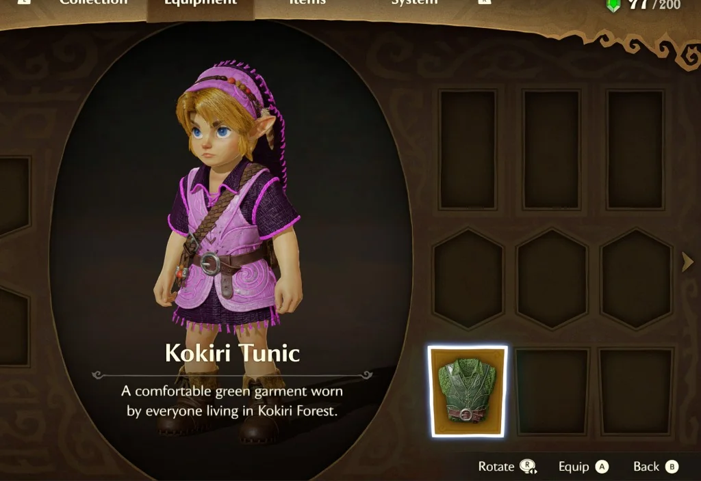
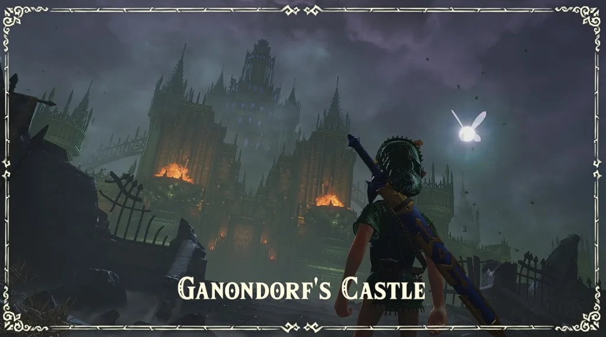
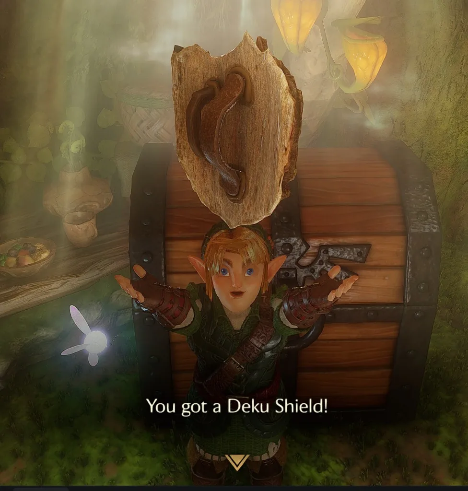
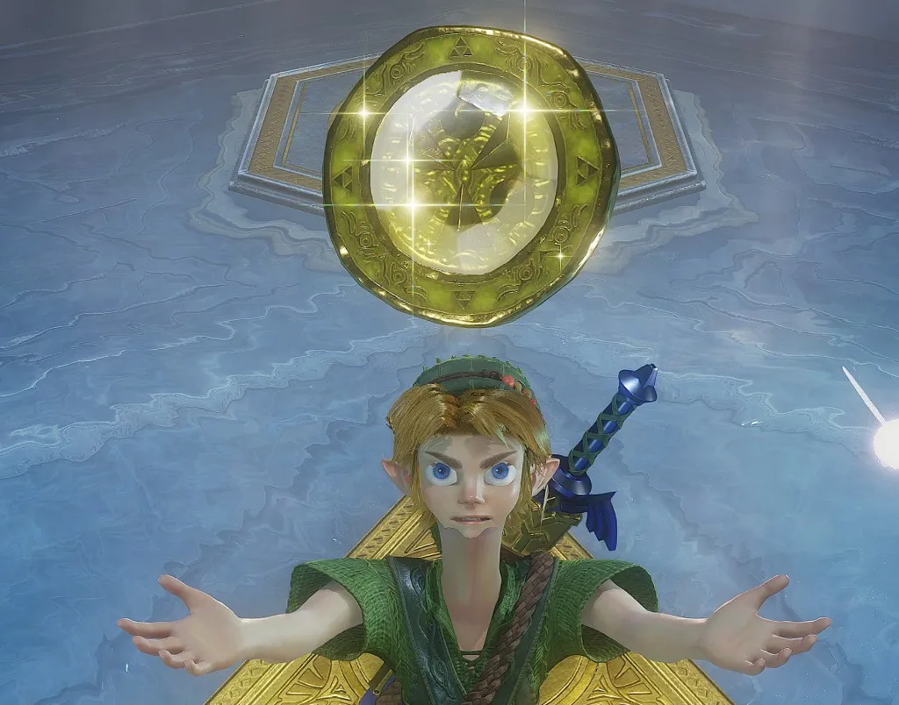
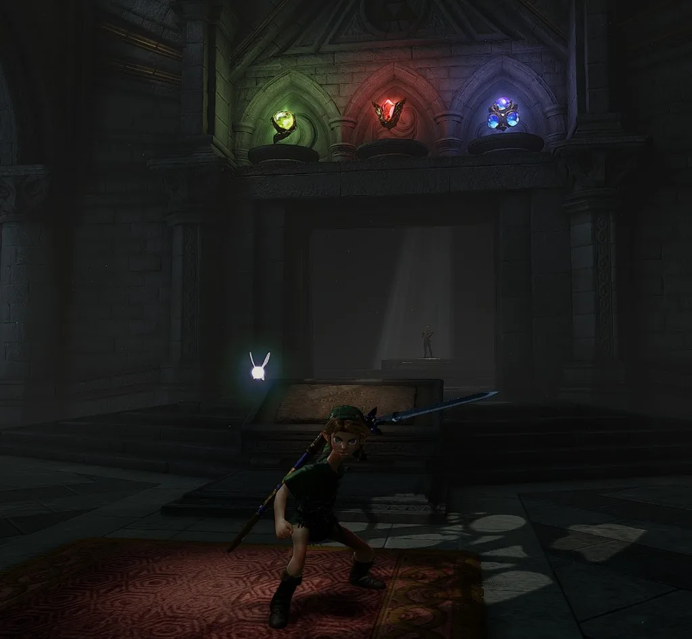

Two minutes of a real seed
This is a proof of concept, recorded on my laptop. The frame rate dips are my laptop struggling with the emulator, not the randomizer. A stronger PC runs it much more smoothly.
Things to watch for: items turning up where they don't belong, like the Goron's Bracelet sitting in a Kokiri Forest chest; grass, pots and rocks that can hold anything; trap enemies hiding among the items; and map markers showing checks you haven't found yet, which is still a work in progress. Oh, and that's Lunk in a black tunic.
Seed and settings used in this video
Seed: 145878048
Settings string:
eyJsb2dpYyI6InJlbGF4ZWQiLCJvcGVuX2ZvcmVzdCI6Im9wZW4iLCJrYWthcmlrb19nYXRlIjoiY2xvc2VkIiwiZG9vcl9vZl90aW1lIjoiY2xvc2VkIiwiem9yYV9mb3VudGFpbiI6ImNsb3NlZCIsImdlcnVkb19mb3J0cmVzcyI6InZhbmlsbGEiLCJicmlkZ2UiOiJ2YW5pbGxhIiwiZ2Fub25fYm9zc19rZXkiOiJ2YW5pbGxhIiwidHJpYWxzIjo2LCJzaHVmZmxlX2NoZXN0cyI6dHJ1ZSwiY3V0c2NlbmVfY2hlc3RzIjp0cnVlLCJzaHVmZmxlX25wY3MiOnRydWUsInNodWZmbGVfc2hvcHMiOnRydWUsInNodWZmbGVfZmxvb3IiOnRydWUsInNodWZmbGVfcnVwZWVzIjp0cnVlLCJzaHVmZmxlX2hlYXJ0cyI6dHJ1ZSwic2h1ZmZsZV9wb3RzIjp0cnVlLCJzaHVmZmxlX2NyYXRlcyI6dHJ1ZSwic2h1ZmZsZV9iZWVoaXZlcyI6dHJ1ZSwic2h1ZmZsZV9ncmFzcyI6dHJ1ZSwic2h1ZmZsZV9yb2NrcyI6dHJ1ZSwic21hbGxfYW55dGhpbmciOnRydWUsInNodWZmbGVfbWFwc19jb21wYXNzZXMiOnRydWUsInNodWZmbGVfc29uZ3MiOnRydWUsInRva2VucyI6ImFsbCIsInNjcnVicyI6dHJ1ZSwic2h1ZmZsZV9nZXJ1ZG9fY2FyZCI6dHJ1ZSwic2h1ZmZsZV9mcm9ncyI6dHJ1ZSwic2h1ZmZsZV9taW5pZ2FtZXMiOnRydWUsInNodWZmbGVfc2lkZXF1ZXN0cyI6dHJ1ZSwic2h1ZmZsZV9za3VsbHR1bGFfcmV3YXJkcyI6dHJ1ZSwic2h1ZmZsZV9ncmVhdF9mYWlyaWVzIjp0cnVlLCJzaHVmZmxlX3N0b3J5X2dpZnRzIjp0cnVlLCJzaHVmZmxlX3RyYWRlX3Jld2FyZHMiOnRydWUsInNtYWxsX2tleXMiOiJhbnl3aGVyZSIsImJvc3Nfa2V5cyI6ImFueXdoZXJlIiwidHJhcHMiOiJzb21lIiwiY29sb3JfYnJlYWthYmxlcyI6dHJ1ZSwiaXRlbV9wb29sIjoiYmFsYW5jZWQiLCJzdGFydGluZ19pdGVtcyI6W10sInNraXBfaW50cm8iOnRydWUsInNraXBfYXJlYV9pbnRyb3MiOnRydWUsInNraXBfemVsZGEiOmZhbHNlLCJmcmVlX3NjYXJlY3JvdyI6ZmFsc2UsImNoZXN0X3NpemUiOiJtYXRjaCIsIm1hc2tfcXVlc3QiOmZhbHNlLCJtYXBfbWFya2VycyI6dHJ1ZSwiaGludHMiOiJiYWxhbmNlZCIsImNvc21ldGljcyI6eyJrb2tpcmlfdHVuaWMiOiJCbGFjayIsImtva2lyaV91bmRlciI6IldoaXRlIiwiZ29yb25fdHVuaWMiOiJHb2xkIiwiem9yYV90dW5pYyI6IlZpdmlkIEN5YW4iLCJzaWx2ZXJfZ2F1bnRsZXRzIjoiTGltZSIsImdvbGRlbl9nYXVudGxldHMiOiJTa3kgQmx1ZSIsImNoaWxkX21vZGVsIjoiTHVuayAoU3RvdXQgTGluaykiLCJhZHVsdF9tb2RlbCI6IkxhbmsgKFN0cmV0Y2hlZCBMaW5rKSJ9fQ










Screenshots from my own copy, played in Lichii. Scroll sideways, or click one to see it bigger.
1Your game
To get a RomFS folder, right-click the game in your emulator and pick Dump RomFS (or Extract RomFS). Include the update you play on. Only the few hundred files the randomizer needs are read, and none of them are uploaded.
2Settings
Start from one of these, then change whatever you like.
3Seed
Same seed and same settings always give the same game. Any word works as a seed.
Send this to a friend and you'll both be playing the same rules.
The spoiler log says where every item ended up. Save it for when you're truly stuck.
Installing it
How it works
Your game files aren't touched
The site makes a separate mod folder full of replacement files, and your emulator loads those instead of the originals. Delete the folder and the game is back to normal.
Every seed is checked before you get it
An important item only goes somewhere you could reach without already having it. Once everything is placed, the randomizer plays through the whole seed on its own to make sure Ganon can be reached, and throws the seed away if not. No Logic skips all of this.
The rules come from the remake itself
Young Link and adult Link are tracked separately, since they can reach different places with different tools. The requirements were checked against the Switch 2 version's own level files: what covers each grotto (Song of Storms, a bombable floor, a heavy rock, a hammer rock), what's waiting inside, which Gold Skulltulas sit on bean patches, trees, crates or walls, and spots the remake moved, like Ruto's Letter at the bottom of Lake Hylia.
It hasn't been through enough full playthroughs to be called finished. If a seed ever expects you to reach something you can't, please tell me and include your settings string. I read every report.
What the mod changes
Item spots are written into each area's layout files, rewards into the characters' scripts, starting items into the new-save defaults, and colors into Link's textures. Important items that land on the ground become objects you pick up by walking into them.
Installing
Which game files work
.nup files and extracted RomFS folders both work fully. For a folder, extract the RomFS with your emulator, including the update you play on.
NSP, XCI, NSZ and XCZ files are encrypted. The site will still try, and if it can't read one it sends me a short description of how the file is laid out (the names and sizes of the parts inside) so I can add support. No game data, keys or personal files are ever sent.
Game updates
A mod is built for the exact game version you give it. After the game updates, make a new seed from the updated copy.
About this project
Who made it
I'm a middle-aged guy who almost always has a randomizer run playing on a second screen while I work. There's something about watching a runner find the Hookshot in a Deku Scrub, or walk into a dungeon with nothing but a stick and a plan, that never gets old. Ocarina of Time randomizers have kept me company through a lot of long workdays.
I did some coding back when AOL was a thing. All of that old code is history now, lost along with the computers it lived on, and life moved on to other things. When the remake came out and there was no randomizer for it, that old itch came back. I wanted to play the thing I'd spent years watching, on the version of the game I was playing, and nobody had made it yet.
How it was made
I'll be upfront: this was coded with AI. I decided what the randomizer should do and how every part of it should behave, then worked through it with an AI coding assistant over many long sessions until it did. I pay for those tools out of my own pocket, because I wanted this done properly and not thrown together.
Most of the work wasn't writing code, it was playing. Every change got tested in Lichii, often over and over. Chests that wouldn't open. Big chests that froze the game. Keys that didn't say which dungeon they belonged to. Rocks that respawned at the wrong time, and items that fell through the floor. Each one meant starting a new file, walking back to the same spot, and trying again until it worked. Somewhere along the way Lank and Lunk happened, and I laughed harder at those than I expected to.
Think of it like having a house built. I didn't lay every brick myself, but I drew up the plans, made the decisions, and walked through every room before calling it finished. And if you find a door that doesn't open, I want to hear about it.
All locations, scripts and map data were read from my own copy of the game. The code is public on GitHub under GPL-3.0-or-later, so anyone can check how it works or help improve it.
Why share it
Because randomizers are better with other people. If this gives you one fun run, a good laugh at Lunk, or a reason to revisit a game you love, then it did what I hoped. Thank you for giving it a try.
Inspiration
The idea, and many of the options, come from the Ocarina of Time Randomizer for the N64 game and the community around it: keysanity, song shuffle, Gossip Stone hints, open settings, Gold Skulltula shuffle and traps. Lank and Lunk are a nod to the long-running community joke. This project isn't affiliated with them and shares none of their code, but it wouldn't exist without their work. Please support them.
Thanks also to the speedrunning and randomizer communities in general, for making these games so much fun to watch.
Open source tools used
- evfl by leoetlino, for event scripts (GPL-2.0-or-later)
- astc-encoder by Arm, for texture recoloring (Apache-2.0)
- Pyodide, which runs the randomizer in your browser (MPL-2.0)
- python-zstandard (BSD-3-Clause), mmh3 (MIT), NumPy (BSD-3-Clause) and Pillow (MIT-CMU)
- TeX Gyre Pagella by GUST e-foundry, for the title screen text (GUST Font License)
- File format research shared publicly by the Tears of the Kingdom modding community